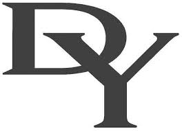
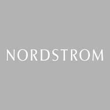

<!DOCTYPE html>
<html lang="en"></html>
<meta charset="UTF-8">
    <head>
        <title>My Resume</title>
    </head>
        <body>
            
            <h1>Una Ganbold</h1>
            <hr>
            <h3>Summary</h3>
            <p>Results-driven sales professional with more than 10 years of experience in exceeding targets and building client relationships. Transitioning to IT, I aim to leverage my strong analytical skills and passion for technology to deliver tailored solutions and support digital transformations.</p>
        <ul>
        </ul>
        <ul><li><h4>Skills</h4></li>
    <ul>
        <li>Relationship Building: 
            <ul><li>Expertise in developing and maintaining strong client relationships.</li></ul></li>
        <li>Negotiation: 
            <ul><li>Skilled in negotiating contracts and closing sales effectively.</li></ul></li>
        <li>Communication Skills: 
            <ul><li>Strong verbal and written communication skills for effective presentations and client interactions.</li></ul></li>
        <li>Adaptability: 
            <ul><li>Flexible and open to change, with a track record of successfully navigating diverse environments.</li></ul></li>
    </ul>    
        
            <ul></ul>
            <li><h4>Education</h4></li>

            <ul><li>Udemy, The Complete 2024 Web development Bootcamp</li>
                <ul><li>Certificate of Complete</li></ul></ul>
            <ul><li>Puhmim College, Hotel Administration/Management 
                <ul><li>Diploma Degree,  2011-2012</li></ul></li></ul>
            <ul><li>Wind Horse University, Tourism Management </li>
                <ul><li>Bachelor's Degree,  2004-2008</li></ul></ul>
    
                <br/>

        <li><h4>Work Experience</h4></li></ul>
        <ul>
            <ul><li>
                <p>David Yurman -  Brand Ambassador, 2017-2024 </p>
                
        
            </li>
        <li><p>T&U Mongolian Cashmere - Managing Partner, 2014-2016</p>
            
    </li>
    <li><p>Nordstrom - Sales Person , 2015-2016 </p>
        

    </li>
    </ul></ul>
        
        <ul>
            <li><h4>Previous Project</h4></li>
            <ul><li><a href="https://www.tucashmere.com/"> www.tucashmere com</a></li>
            </ul>
        </ul>

<h5>My Hobbies</h5>
<ul>
    <li>Cooking</li>
    <li>Hiking</li>
    <li>Reading books. ( see my favourite <a href="link-source/starter.html">book list</a> )</li>
</ul>
</ul>        
    </ul>
<h3><a href="link-source/Contact me.html">Contact Me</a></h3>
<br/>
<a href="https://www.linkedin.com/in/una-uranbileg-ganbold-2356244a/"></a>
<a href="https://www.facebook.com/unaganbold"></a>

<footer>
    <p>© 2024 Una Ganbold Copy Right</p>
  </footer>
 


        </body>
</html>
